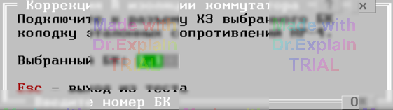

3.11 Коррекция сопротивления изоляции коммутатора (RIZCOMT)
Утилита используется для определения сопротивления изоляции коммутатора (между двумя точками, одна на шине A1, другая - B1).
Утилита предоставляет меню, показанном на рисунке:

После выбора БК и установки в него НР-4 нажмите Enter. АСК автоматически определит R изоляции коммутатора и предложит занести его в конфигурацию аппаратуры АСК (меню "Проверка сопротивления изоляции", опция "Rиз коммутатора,ГОм"). Ввод осуществляется по паролю.